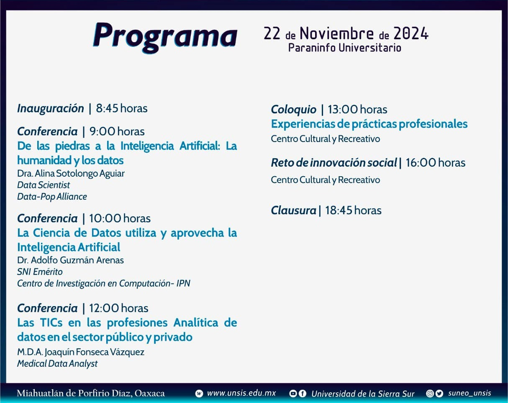

Jornada Informática
Jornada académica de la Licenciatura en Informática.

Les compartimos el Programa de la 15a Jornada Académica de la Licenciatura en Informática "Decisiones basadas en la ciencia de datos", que se llevará a cabo el 22 de noviembre de 2024, en el Paraninfo Universitario.
